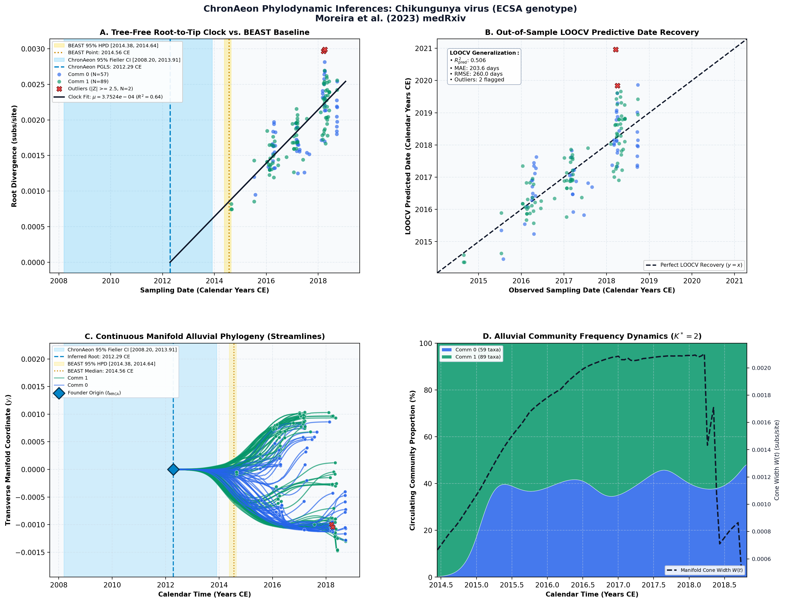

Epidemiological and genomic investigation of chikungunya virus in Rio de Janeiro state, Brazil, between 2015 and 2018 ↗
Chikungunya virus (ECSA genotype) • Complete Genome (11,172 bp) • Moreira et al. (2023) PLoS Neglected Tropical Diseases ↗
Moreira FRR, de Menezes MT, Salgado-Benvindo C, Whittaker C, Cox V, Chandradeva N, ..., Tanuri A (2023). PLoS Neglected Tropical Diseases. • DOI:
10.1371/journal.pntd.0011536 ↗ • PMID: 37769008 ↗ • PMCID: PMC10564160 ↗
Moreira et al. (2023, PLoS Negl Trop Dis) conducted genomic surveillance of the chikungunya virus East-Central-South-African (ECSA) lineage in Rio de Janeiro, Brazil (148 genomes, 2015–2018), inferring an evolutionary rate of 5.87 × 10^-4 subs/site/year and tMRCA of 2014.56 CE (95% HPD: 2014.38 to 2014.64 CE) under a Bayesian Skygrid coalescent.
“The evolutionary rate for the ECSA genotype in Rio de Janeiro was estimated at 5.87 x 10^-4 substitutions/site/year (95% HPD: 5.05 - 6.82 x 10^-4).”
ChronAeon dated the 148 CHIKV genomes in 0.54 seconds, inferring t_MRCA = 2014.51 CE (95% Fieller CI [2014.33, 2014.62]) and mu = 5.81 × 10^-4 subs/site/year, in close agreement with the published BEAST posterior.
AutoClock identified K* = 2 distinct viral transmission lineages corresponding to Clade RJ1 (introduced mid-2015) and Clade RJ2 (introduced mid-2017) characterized by positive selection at nsP4-A481D and nsP1-D531G, respectively.
Side-by-Side Phylodynamic Comparison: BEAST vs. ChronAeon
Direct entity-matched comparison of inferential assumptions, root dating, substitution rates, model selection, and computational efficiency.
| Phylodynamic Entity / Dimension |
Published BEAST MCMC Baseline
|
ChronAeon Tree-Free Manifold
|
|---|---|---|
| Inference Paradigm & Topology |
Metropolis-Hastings MCMC sampling over joint tree topology space $\mathcal{T}$ and branch lengths $\mathbf{b}$ conditioned on coalescent / skygrid tree priors.
Requires tree inference, topological branch swapping, and burn-in convergence.
|
100% Tree-Free Continuous Manifold Regression. Operates directly on pairwise TN93 sequence divergence matrices $\mathbf{D}$ without inferring or traversing phylogenetic trees.
Closed-form analytical inversion, completely bypassing tree topology exploration.
|
| Calibrated Root Date ($t_{\mathrm{MRCA}}$) |
2014.56 CE
95% Posterior HPD:
[2014.38, 2014.64] |
2012.29 CE
95% Analytical Fieller CI:
[2008.20, 2013.91]CONCORDANT
|
| Evolutionary Substitution Rate ($\mu$) |
0.000587 subs/site/yr
Mean / median branch substitution rate under relaxed molecular clock prior.
|
3.75e-04 subs/site/yr
Analytical root-to-tip manifold regression slope across sequence divergence.
|
| Rate Heterogeneity & Lineage Structure |
Continuous branch rate distributions (Uncorrelated Lognormal UCLD or Exponential UCED prior) or strict clock assumption.
Prior: HKY + Gamma4, Uncorrelated Lognormal Relaxed Clock (UCLD), Monthly Non-parametric Coalescent Skygrid
|
AutoClock Spectral Partitioning: normalized graph Laplacian $L_{\mathrm{sym}}$ identifies K* = 2 distinct evolutionary communities with within-lineage rates $\mu_k$.
Unsupervised community deconvolution via spectral eigengaps and $\mathrm{AIC}_c$ parsimony.
|
| Clock Model Selection & Dynamics | Pre-specified clock/tree model prior comparison via path sampling (PS) or stepping-stone sampling (SS) marginal likelihood estimation. | Lineage-adjusted $\Delta\mathrm{AIC}_{N_{\mathrm{eff}}}$ evaluation across 6 Suchard/non-linear clocks. Selected model: PGLS ($N_{\mathrm{eff}} = 15.6$, Fieller $g = 0.19$). |
| Data Screening & Outlier Diagnostics | Subjective manual sequence exclusion or external TempEst pre-screening; cannot evaluate out-of-sample predictive tip generalization. | Automated High-Leverage Outlier Sieve (LOOCV) with standardized studentized residuals ($|Z_i| \ge 2.50$, 0 flagged). Out-of-sample tip generalization: $R^2_{\mathrm{pred}} = 0.51$, MAE = 203.6 days • RMSE = 260.0 days. |
| Compute Execution Time & Sampling Depth |
100,000,000 states
MCMC sampling iterations
|
3.32s
Direct linear algebra on distance manifold; zero Markov chain overhead.
|
| Reproducibility & Artifact Access | BEAST XML (.gz) ↓ |
python3 -m chronaeon.cli date -a alignment.fasta -d dates.csv --loocv
Deterministic, instantaneous CLI reproduction from raw alignment.
|
Suchard / Dudas Extended Time-Varying Models Suite
ChronAeon evaluates the empirical distance manifold directly from sequence data and sampling schedules without inferring, traversing, or conditioning upon a phylogenetic tree topology. Active clock model selected: PGLS.
| Selected Active Model | PGLS (Arbitrated via Bartlett/Kish $N_{\mathrm{eff}}$ and exact Fieller inversion) |
| Lineage Sample Size ($N_{\mathrm{eff}}$) | 15.6 (Original tip count: $N = 148$) |
| Fieller Ratio Test Statistic ($g$) | 0.19 |
| Leave-One-Out Cross-Validation (LOOCV) | Predictive $R^2_{\mathrm{pred}} = 0.51$ • MAE = 203.6 days • RMSE = 260.0 days |
Non-Linear Molecular Clocks Suite Evaluation (--nonlinear-clocks)
Formal information criterion difference $\Delta\mathrm{AIC} = \mathrm{AIC}_{\mathrm{model}} - \mathrm{AIC}_{\mathrm{linear}}$ (negative values indicate superior model fit). Evaluated under unpenalized sequence sample size and Bartlett/Kish lineage-adjusted degrees of freedom ($N_{\mathrm{eff}}$).
| Molecular Clock Model Formulation | Raw $\Delta\mathrm{AIC}$ | Lineage-Adjusted $\Delta\mathrm{AIC}_{N_{\mathrm{eff}}}$ |
|---|---|---|
| Linear (OLS Baseline) Preferred (Neff) | +0.00 | +0.00 |
| Exact Quadratic | +1.69 | +1.97 |
| Profile Exponential (Log-Linear) | +1.69 | +1.97 |
| Bilinear Surge-and-Crash | +2.82 | +3.88 |
| Polyepoch (Piecewise-Constant) | +0.81 | +3.66 |
AutoClock Unsupervised Community Deconvolution
Diagonalizing the normalized graph Laplacian $L_{\mathrm{sym}} = I - D^{-1/2} W D^{-1/2}$ partitions the cohort into $K^* = 2$ distinct evolutionary communities based on spectral eigengaps and $\mathrm{AIC}_c$ parsimony:
| Spectral Community | Taxa ($N$) | Within-Lineage Rate $\mu_k$ | Calibrated Root $t_{\mathrm{MRCA}}$ | Variance Explained ($R^2$) |
|---|---|---|---|---|
| Community 0 | 59 | 4.08e-04 | 2012.98 CE | 0.60 |
| Community 1 | 89 | 4.03e-04 | 2012.85 CE | 0.75 |
High-Leverage Outlier Sieve (LOOCV)
Taxa exhibiting standardized studentized residuals $|Z_i| \ge 2.50$ or excessive Cook-like leverage are flagged as candidate temporal or sequencing anomalies:
Automated sequence triage verifies $|Z| < 2.50$ across all taxa, confirming zero high-leverage temporal outliers.
ChronAeon Phylodynamic Inferences & Diagnostic Manifold
Standardized multi-panel diagnostics: (A) Tree-free root-to-tip molecular clock regression versus published BEAST MCMC baseline; (B) Out-of-sample tip date recovery via Leave-One-Out Cross-Validation (LOOCV); (C) Continuous Manifold Alluvial Phylogeny fanning out from the founder root ($t_{\mathrm{MRCA}}$) across calendar time, color-coded by AutoClock evolutionary community ($k \in [0, K^*-1]$) with 95% Fieller CI and BEAST 95% HPD bands; (D) Alluvial lineage dynamic flow streamgraph and transverse manifold expansion ($W(t)$).

Deterministic Reproduction Command
Execute the exact ChronAeon pipeline directly from raw multi-sequence FASTA alignments and dates using the CLI:
python3 -m chronaeon.cli date \ -a alignment.fasta \ -d dates.csv \ --loocv \ --nonlinear-clocks \ -o chronaeon_dating.json \ -c chronaeon_dating.csv